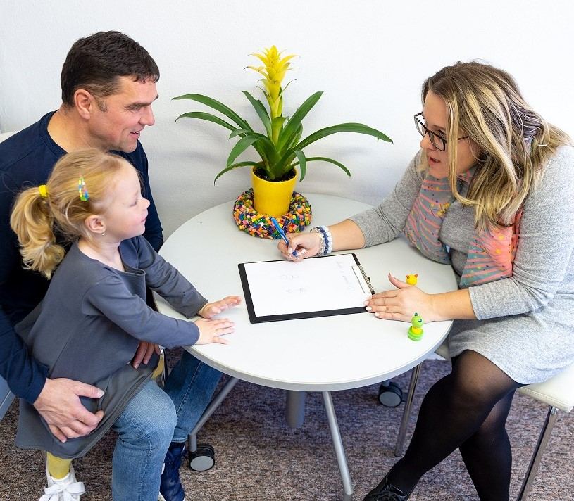

Für Eltern & Sorgeberechtigte
Sie suchen Unterstützung für Ihr Kind? Wir erklären Ihnen den Weg, klären Fragen zur Schul- oder Kitabegleitung und begleiten Sie Schritt für Schritt.
Unterstützung anfragenSchul- & Kitabegleitung in Karlsruhe
Die GFI Baden begleitet Kinder, Jugendliche und Familien mit klaren Prozessen, erfahrenen Ansprechpartnern und einem Team, das auf Augenhöhe arbeitet.
In Karlsruhe, im Landkreis und in angrenzenden Kreisen, direkt vor Ort im Alltag.
Wir begleiten Sie bei Antrag, Abstimmung und jedem Schritt, klar erklärt.
Feste Kontaktpersonen und transparente, offene Kommunikation für alle Beteiligten.
Drei Wege
Sie suchen Unterstützung für Ihr Kind? Wir erklären Ihnen den Weg, klären Fragen zur Schul- oder Kitabegleitung und begleiten Sie Schritt für Schritt.
Unterstützung anfragenSie möchten sinnstiftend arbeiten? Bei der GFI Baden finden Fachkräfte, Quereinsteiger, Werkstudierende und FSJ’ler einen klaren Einstieg.
Jobs ansehenSie suchen einen verlässlichen Träger mit klaren Abläufen, guter Erreichbarkeit und transparenter Zusammenarbeit?
Kooperation anfragenDas sind wir
Wir sind ein Sozialunternehmen mit Sitz in Karlsruhe, aktiv in der Kinder- und Jugendhilfe sowie der Eingliederungshilfe. Wir begleiten Kinder und Jugendliche im Schul- und Kitaalltag und bieten ambulante Hilfen zur Erziehung an.
Wir nehmen Kinder und ihre Bedürfnisse ernst, hören zu und finden individuelle Lösungen.
Wir setzen auf hohe Fachlichkeit und qualifizieren unser Team kontinuierlich weiter.
Wir beziehen Familien von Anfang an ein und reflektieren den Prozess regelmäßig gemeinsam.
Unsere Haltung
Jedes Kind verdient einen Alltag, in dem es wirklich teilhaben kann.
Unsere Leistungen
Individuelle Unterstützung für Kinder und Jugendliche mit besonderem Bedarf im Schul- und Kitaalltag, im Unterricht wie im sozialen Miteinander.
Mehr erfahren
Unterstützung für Familien bei Herausforderungen im Alltag, in Krisen und im Kontakt mit Ämtern und Institutionen.
Mehr erfahren
Seit dem 01.10.2025 bietet GFI Autismustherapie auch am Standort Karlsruhe an, fachlich fundiert und individuell abgestimmt.
Zur AutismustherapieWir hören zu und zeigen Ihnen den passenden Weg, ohne Druck und auf Augenhöhe.
Erstgespräch vereinbarenFür Eltern & Sorgeberechtigte
Sie müssen den Weg nicht allein gehen. Wir begleiten Sie von der ersten Frage bis zur Begleitung im Alltag.
Rufen Sie uns an oder schreiben Sie uns eine Nachricht.
Wir klären gemeinsam, welche Unterstützung Ihr Kind benötigt.
Wir beraten auf Wunsch zur Antragstellung beim zuständigen Jugendamt oder Eingliederungshilfeträger.
Nach der Bewilligung lernen Sie die passende Begleitung kennen, wir reflektieren regelmäßig gemeinsam.
Wir melden uns mit den nächsten Schritten.
Für Bewerber & Quereinsteiger
Wer in der Schulbegleitung arbeitet, übernimmt Verantwortung im Alltag junger Menschen. Bei uns bekommen Sie dafür klare Strukturen, Ansprechpartner und ein Team, das Sie nicht allein lässt.
Bewerbung einfach starten. Fragen klären wir im persönlichen Gespräch.
Für Schulen, Ämter & Leistungsträger
Gute Vernetzung, Transparenz im Gesamtprozess und kontinuierliche Kommunikation entscheiden darüber, ob Begleitung gelingt.
Feste Kontaktpersonen und gute Erreichbarkeit im gesamten Prozess.
Klare Zuständigkeiten und nachvollziehbare Kommunikation mit allen Beteiligten.
Qualifizierte Mitarbeitende und kontinuierliche Weiterbildung.
Wir evaluieren die Zufriedenheit von Leistungsträgern und entwickeln uns weiter.
Qualität & Vertrauen
Wir stellen uns regelmäßig auf den Prüfstand und lassen unsere Arbeit als Arbeitgeber durch Great Place to Work® evaluieren. 2024 haben wir überdurchschnittliche Ergebnisse erzielt und arbeiten jeden Tag daran, uns weiter zu verbessern.
Mehr über Qualität erfahrenWir tun unser Bestes, um ein attraktiver Arbeitgeber zu sein und uns fortlaufend zu verbessern.
Aktuelles
Wir stellen unsere GFI-Akademie und die zertifizierte Weiterbildung Schulbegleitung vor.
Zwei spannende Einführungstage mit Wissensvermittlung und Erste-Hilfe-Kurs.
Wir ordnen die aktuelle Umsetzung des BTHG in Baden-Württemberg für die Praxis ein.
Häufige Fragen
Sie finden Ihre Frage nicht? Wir beantworten sie gern persönlich.
Frage stellenSchulbegleitung ist eine individuelle Unterstützung für Kinder und Jugendliche mit besonderem Bedarf im Schul- und Kitaalltag. Eine Begleitperson unterstützt im Unterricht und im sozialen Miteinander, damit Teilhabe gelingt.
Sie richtet sich an Kinder und Jugendliche mit körperlichen, seelischen oder geistigen Beeinträchtigungen, die im Alltag in Schule oder Kita Unterstützung benötigen, um gleichberechtigt teilzunehmen.
Die Schulbegleitung wird beim zuständigen Jugendamt oder beim Träger der Eingliederungshilfe beantragt. Welcher Weg passt, hängt vom individuellen Bedarf ab, wir erklären Ihnen den Ablauf Schritt für Schritt.
Ja. Auf Wunsch beraten wir Sie zur Antragstellung, erläutern die Zuständigkeiten und begleiten Sie im Austausch mit dem zuständigen Amt.
Ja. Neben ausgebildeten Fachkräften sind auch Quereinsteiger, Werkstudierende und FSJ’ler herzlich willkommen. Wir finden für jede Bewerberin und jeden Bewerber das passende Einsatzgebiet und arbeiten Sie strukturiert ein.
Schulen, Ämter und Kooperationspartner erreichen uns telefonisch unter 0721/61930339 oder per E-Mail an info@gfi-baden.de. Gern stimmen wir Zuständigkeiten und Abläufe direkt mit Ihnen ab.
Nächster Schritt